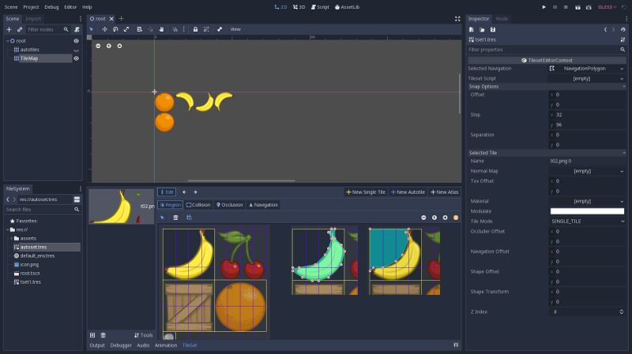

Godot TileSet(.tres) File Format¶
TileSet Resource¶
TileSet file (.tres) composed from 2 major parts.
Part I: referenced resources¶
[gd_resource type="TileSet" load_steps=7 format=2]
[ext_resource path="res://asserts/t02.png" type="Texture" id=1]
[sub_resource type="NavigationPolygon" id=1]
vertices = PoolVector2Array( 0, 0, 96, 0, 88, 8, 96, 24, 80, 64, 64, 80, 32, 96, 8, 96, 0, 104 )
polygons = [ PoolIntArray( 0, 1, 2, 3, 4, 5, 6, 7, 8 ) ]
[sub_resource type="ConvexPolygonShape2D" id=2]
points = PoolVector2Array( 104, 0, 104, 24, 120, 40, 128, 56, 120, 88, 88, 120, 64, 128, 48, 128, 24, 120, 0, 104, 0, 96, 16, 96, 56, 88, 80, 64, 88, 48, 96, 24, 88, 8, 96, 0 )
The NavigationPolygon and ConvexPolygonShape2D are created with “collition” and “navigation” command.
{kind=link}
Part II: tile definition¶
Tiles are defined in “id/porp-name” format, all in “[resource]” section
[resource]
0/name = "t02.png 0"
0/texture = ExtResource( 1 )
0/tex_offset = Vector2( 0, 0 )
0/modulate = Color( 1, 1, 1, 1 )
0/region = Rect2( 0, 0, 128, 128 )
0/tile_mode = 0
0/occluder_offset = Vector2( 0, 0 )
0/navigation_offset = Vector2( 0, 0 )
0/navigation = SubResource( 1 )
0/shapes = [ {
"autotile_coord": Vector2( 0, 0 ),
"one_way": false,
"one_way_margin": 1.0,
"shape": SubResource( 2 ),
"shape_transform": Transform2D( 1, 0, 0, 1, 0, 0 )
} ]
0/z_index = 0
Where shapes are defined as collision shape, and region must be the sprite area.
TODO: sprite
Loader¶
Class TileSet¶
scene/resources/tile_set.h
class TileSet : public Resource {
GDCLASS(TileSet, Resource);
public:
struct ShapeData { ... };
enum AutotileBindings {
BIND_TOPLEFT = 1,
BIND_TOP = 2,
BIND_TOPRIGHT = 4,
...
BIND_IGNORE_BOTTOMRIGHT = 1 << 24
};
enum TileMode { ... }
struct AutotileData { ... };
private:
struct TileData { ... };
Map<int, TileData> tile_map;
...
}
ShapeData¶
struct ShapeData {
Ref<Shape2D> shape;
Transform2D shape_transform;
Vector2 autotile_coord;
bool one_way_collision;
float one_way_collision_margin;
ShapeData() {
one_way_collision = false;
one_way_collision_margin = 1.0;
}
};
scene/resources/shape_2d.h
class Shape2D : public Resource {
GDCLASS(Shape2D, Resource);
OBJ_SAVE_TYPE(Shape2D);
RID shape;
real_t custom_bias;
...
}
core/rid.h
class RID_Data {
uint32_t _id;
public:
_FORCE_INLINE_ uint32_t get_id() const { return _id; }
virtual ~RID_Data();
};
class RID {
mutable RID_Data *_data;
public:
_FORCE_INLINE_ RID_Data *get_data() const { return _data; }
_FORCE_INLINE_ bool operator==(const RID &p_rid) const {
return _data == p_rid._data;
}
...
}
Shape2D Subclasses¶
- CapsuleShape2D
scene/resources/capsule_shape_2d.h
class CapsuleShape2D : public Shape2D {
GDCLASS(CapsuleShape2D, Shape2D);
real_t height;
real_t radius;
...
}
- CircleShape2D
scene/resources/circle_shape_2d.h
class CircleShape2D : public Shape2D {
GDCLASS(CircleShape2D, Shape2D);
real_t radius;
void _update_shape();
...
}
- ConcavePolygonShape2D
scene/resources/concave_polygon_shape_2d.h
class ConcavePolygonShape2D : public Shape2D {
GDCLASS(ConcavePolygonShape2D, Shape2D);
...
}
- ConvexPolygonShape2D
class ConvexPolygonShape2D : public Shape2D {
GDCLASS(ConvexPolygonShape2D, Shape2D);
Vector<Vector2> points;
...
}
- LineShape2D
class LineShape2D : public Shape2D {
GDCLASS(LineShape2D, Shape2D);
Vector2 normal;
real_t d;
...
}
- RectangleShape2D
class RectangleShape2D : public Shape2D {
GDCLASS(RectangleShape2D, Shape2D);
Vector2 extents;
...
}
- SegmentShape2D & RayShape2D
class SegmentShape2D : public Shape2D {
GDCLASS(SegmentShape2D, Shape2D);
Vector2 a;
Vector2 b;
...
}
class RayShape2D : public Shape2D {
GDCLASS(RayShape2D, Shape2D);
real_t length;
bool slips_on_slope;
...
}